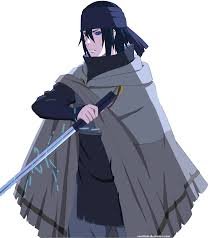
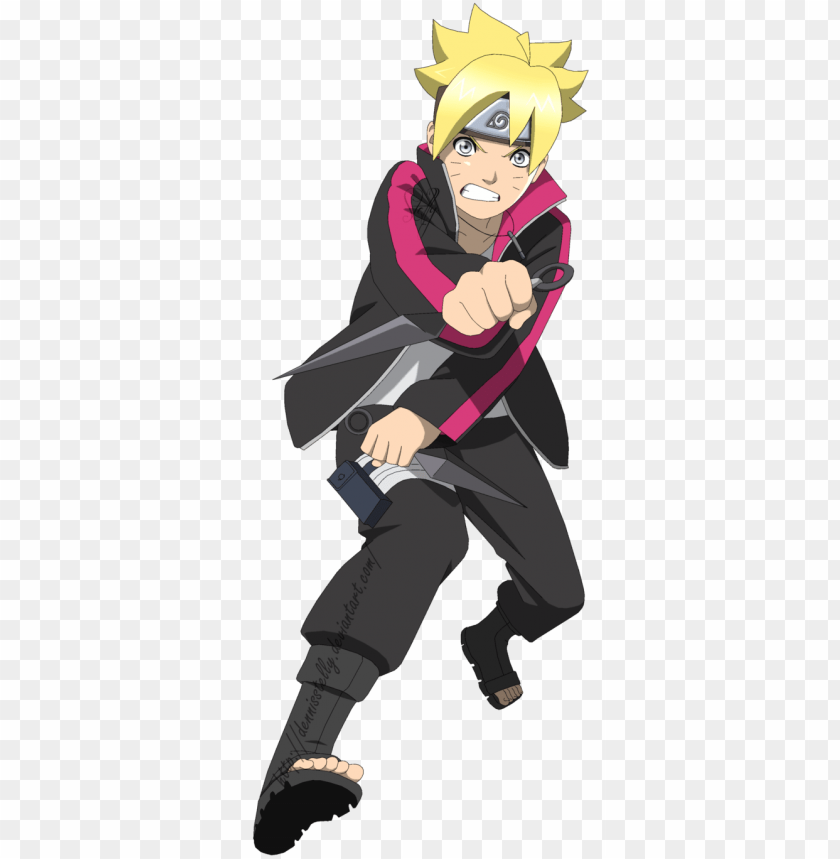

|
Naruto Uzumaki |
Naruto Uzumaki (うずまきナルト, Uzumaki Naruto) is a shinobi of Konohagakure's Uzumaki clan. He became the jinchūriki of the Nine-Tails on the day of his birth — a fate that caused him to be shunned by most of Konoha throughout his childhood.
|
33 |
Hokage |
Male |
 |
Sakura Uchiha |
Sakura Uchiha (うちはサクラ, Uchiha Sakura, née Haruno (春野)) is a kunoichi of Konohagakure. When assigned to Team 7, Sakura quickly finds herself ill-prepared for the duties of a shinobi.
|
23
|
Jounnin |
Female |
|  |
Sasuke Uchiha |
Sasuke Uchiha (うちはサスケ, Uchiha Sasuke) is one of the last surviving members of Konohagakure's Uchiha clan and the current reincarnation of Indra.
|
35 |
Jounnin |
Male |
|  |
Boruto Uzumaki |
Boruto Uzumaki (うずまきボルト, Uzumaki Boruto) is a shinobi from Konohagakure's Uzumaki Clan and a direct descendant of the Hyūga clan through his mother.
|
14 |
Gennin |
Male |